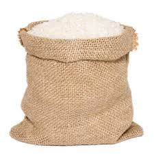
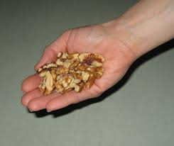
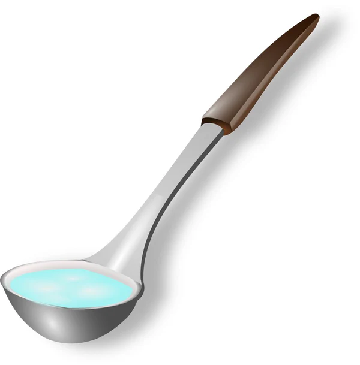

Preserving Culture Through Numbers
The Ilocano people are among the largest ethnolinguistic groups in the Philippines, mostly inhabiting the Ilocos Region (Ilocos Norte, Ilocos Sur, La Union, Pangasinan). They are known for their hardworking, thrifty, and resourceful nature.
Ilocanos are culturally rich and value masinop (thriftiness and resourcefulness). Their language has two number systems: a native Ilocano system and a Spanish-derived system, showing the deep influence of colonization and cultural adaptation.
The Ilocano number system combines both native words and Spanish terms. The native system is often used in traditional and cultural contexts, while the Spanish-derived system is widely used in daily transactions and modern counting.
| Ilocano Native | Ilocano Spanish |
|---|---|
| 1: Maysa | Uno |
| 2: Dua | Dos |
| 3: Tallo | Tres |
| 4: Uppat | Kuatro |
| 5: Lima | Singko |
| 6: Innem | Sais |
| 7: Pito | Siete |
| 8: Walo | Otso |
| 9: Siam | Nuebe |
| 10: Sangapulo/Pullo | Dies |
| 11: Sangapulo ket Maysa | Once |
| 20: Duapulo | Bente |
| 100: Sangagasut | Syento |
| 1000: Sangaribu | Mil |
| 1,000,000: Sangariwriw | Milyon |
Rukod – counting paces to measure distances of land.
Bagting – ropes or cords used to measure fields, often for farming or boundaries.
Chupa – 375 ml, often used for rice and grains.
Ganta – 3 liters / 8 chupa, larger volume for grains or liquids.
Kaban – 50–60 kg / 25 ganta, the standard sack for rice harvest.
Dipa – about 68 inches (length of outstretched arms).
Dangkal – 8–9 inches (span of a hand).
Talampakan – 12 inches (one foot).
Dakot – about 10 grams (a handful).
Salok – 80 ml (a ladleful).
Kasapulan mi ti duapulo a sako ti pagay para iti panagmula.
Translation: We need twenty sacks of rice for planting.
Pabili man ti innem a kilo ti bangus.
Translation: Please give me six kilos of milkfish.
Measurements like dangkal and talampakan are used in tailoring, carpentry, and cooking in rural homes.
The Ilocano number system differs from modern base-10 numerals. It integrates native Ilocano words, Spanish-derived numbers, and Arabic symbols.
Relevance: These systems highlight cultural identity, resourcefulness, and adaptation to colonial influences. They are still used today in agriculture, commerce, and households.
Preservation of the Ilocano number system is vital to cultural heritage. Ways to preserve include: